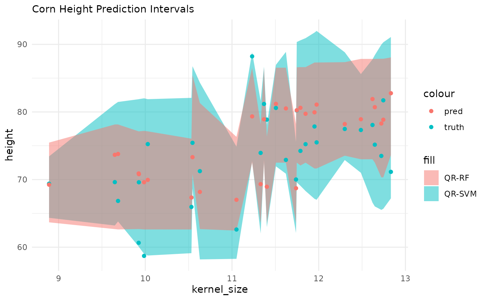

perchance
perchance.RmdPost-Processing in {maize}???
based entirely on the {probably} package implementation for conformal inference & calibration. Hence the pun perchance?
The {probably} package implements the int_conformal_quantile method for generating prediction intervals. This method utilizes random forest quantile regression as its underlying algorithm. In the {maize} package, a new method called int_conformal_quantile_svm has been introduced. This implementation replaces the original quantile regression random forest {quantregForest} approach with a quantile regression SVM {qrsvm}. It’s worth noting that the int_conformal_quantile_svm method relies on the {qrsvm} package, which is currently not available on CRAN.
Key Components
{probably} Package
Method: int_conformal_quantile
Algorithm: quantregForest::quantregForest()
{maize} Package
Method: int_conformal_quantile_svm
Algorithm: qrsvm::qrsvm()
Implementation Details
The int_conformal_quantile_svm method in {maize} represents a straightforward substitution of the RF algorithm. Instead of using random forests, it employs SVMs for generating prediction intervals. This modification allows users to leverage the potential benefits of SVMs in certain prediction scenarios.
Dependency Note
The {qrsvm} package, which is required for the SVM-based implementation in {maize}, is not currently hosted on CRAN. Users interested in utilizing the int_conformal_quantile_svm method should be aware of this external dependency and may need to install it from github.com/frankiethull/qrsvm.
point and interval regressions
The following demonstration begins with an initial point forecast using a Support Vector Machine (SVM) with a Laplacian kernel. Subsequently, we utilize our out-of-bag (OOB) sample to construct conformal prediction intervals. In this comparison, we will evaluate both the int_conformal_quantile method from the {probably} package and the int_conformal_quantile_svm method from the {maize} package. This analysis will provide insights into the performance and characteristics of these two approaches for generating prediction intervals.
set.seed(31415)
# note: qrsvm does not work for non-numeric values
corn_df <- corn_data |> mutate(type = as.numeric(factor(type, levels = levels(type))))
corn_train <- corn_df |> dplyr::sample_frac(.80)
corn_cal <- corn_df |> dplyr::anti_join(corn_train) |> head(30)
corn_test <- corn_df |> dplyr::anti_join(corn_train) |> tail(30)
# SVM base model
svm_spec <-
svm_laplace() |>
set_mode("regression")
svm_wflow <-
workflow() |>
add_model(svm_spec) |>
add_formula(height ~ .)
svm_fit <- fit(svm_wflow, data = corn_train)
# probably's implementation:
rf_int <- probably::int_conformal_quantile(svm_fit, corn_train, corn_cal,
level = 0.80
)
# experimental QRSVM interface for CQR:
svm_int <- int_conformal_quantile_svm(svm_fit, corn_train, corn_cal,
level = 0.80, cost = 1000, degree = 5
)
svm_int
#> Split Conformal inference via Quantile Regression SVM
#> preprocessor: formula
#> model: svm_laplace (engine = kernlab)
#> calibration set size: 30
#> confidence level: 0.8
#>
#> Use `predict(object, new_data)` to compute prediction intervalsSVM with QRF & QRSVM Prediction Intervals
library(ggplot2)
#>
#> Attaching package: 'ggplot2'
#> The following object is masked from 'package:kernlab':
#>
#> alpha
corn_test |>
dplyr::bind_cols(cqr_svm) |>
dplyr::bind_cols(cqr_rf |> dplyr::select(-.pred)) |>
ggplot() +
geom_ribbon(aes(x = kernel_size, ymin = .pred_lo_svm, ymax = .pred_hi_svm, fill = "QR-SVM"), alpha = .5) +
geom_ribbon(aes(x = kernel_size, ymin = .pred_lo_rf, ymax = .pred_hi_rf, fill = "QR-RF"), alpha = .5) +
geom_point(aes(x = kernel_size, y = height, color = "truth")) +
geom_point(aes(x = kernel_size, y = .pred, color = "pred")) +
theme_minimal() +
labs(subtitle = "Corn Height Prediction Intervals")
SVM with Linear & SVM Calibration
In addition to conformal prediction intervals, the {maize} package offers a post-process calibration engine that is similar to the one in {probably}, but utilizes Support Vector Machines (SVMs). The {probably} package includes the cal_estimate_linear function, which calibrates point forecasts using a post-model to address bias in the initial fit. {maize} provides a comparable function called cal_estimate_svm. This function follows a similar framework to cal_estimate_linear, but employs either a vanilla or polynomial kernel, depending on the user’s selection in the “smooth” argument. The following section demonstrates the application of this calibration approach.
Key Components
{probably} Package
Method: cal_estimate_linear
Algorithms:
- stats::glm() is used when smooth is set to
FALSE
- mgcv::gam() is used when smooth is set to
TRUE
{maize} Package
Method: cal_estimate_svm
Algorithms:
- kernlab::ksvm(kernel = "vanilladot") is used when smooth
is set to FALSE
- kernlab::ksvm(kernel = "polydot") is used when smooth is
set to TRUE
Implementation Details
The cal_estimate_svm method in {maize} represents a straightforward substitution of the linear calibration. Instead of using linear models, it employs SVMs for post-calibration. This modification allows users to leverage the potential benefits of SVMs in certain prediction scenarios.
calibration_df <- predict(svm_fit, corn_cal) |> dplyr::bind_cols(corn_cal)
# probably's implementation:
lin_cal_fit <- calibration_df |>
probably::cal_estimate_linear(truth = height, estimate = .pred, smooth = TRUE)
#> Registered S3 method overwritten by 'butcher':
#> method from
#> as.character.dev_topic generics
# experimental svm calibration (vanilladot or polydot)
svm_cal_fit <- calibration_df |>
maize::cal_estimate_svm(height, smooth = TRUE)
#> Setting default kernel parameters
# preds
cal_corn_test <-
predict(svm_fit, corn_test) |>
cbind(corn_test)
# calibrated preds:
maize::cal_apply_regression(svm_cal_fit, cal_corn_test) |> head(10)
#> .pred height kernel_size type
#> 1 64.42768 62.61279 11.051488 2
#> 2 65.53022 71.24822 10.629400 2
#> 3 66.25433 78.86852 11.401994 2
#> 4 68.00431 69.60042 9.926075 2
#> 5 66.04308 70.01313 11.738339 2
#> 6 70.82399 66.84150 9.685755 2
#> 7 70.70666 69.62163 9.648538 2
#> 8 67.20650 75.24819 10.028623 2
#> 9 66.54068 69.38940 8.890259 2
#> 10 68.10534 60.64923 9.923742 2